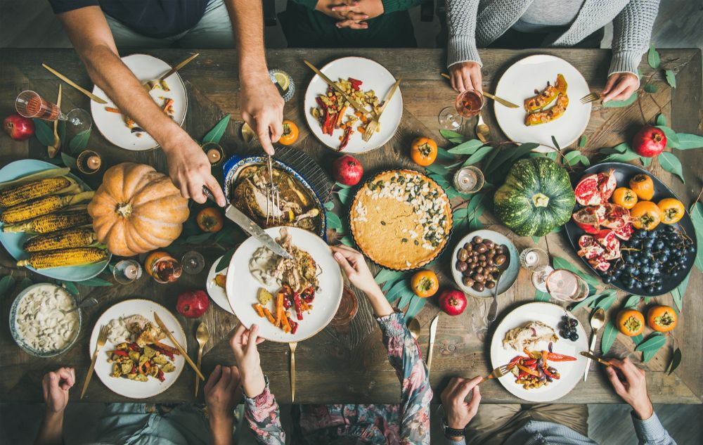

Canada's traditions are a unique amalgamation of several cultures because of its European roots and
proximity to the United States. The province of Quebec - Canada's francophone province - also has traditions
that the rest of the country does not share. Both native peoples and the many waves of immigrants have
contributed to Canada's culture and customs. In addition, the climate of the country affects several customs
and traditions. Some unique customs are:
Cottage Culture: Cottages on lakes and cabins in the woods are integral to national lore.
May 2-4: May Two-Four,
also called Victoria Day, is a public holiday in Canada which honors the last Monday
before May 25. To many Canadians, May Two-Four marks the start of summer, since it was originally set aside
for celebrating Queen Victoria's birthday. However, over time it has evolved into the official birthday of
Canada's sovereign.
Canadian Thanksgiving: Canada is also known for its Thanksgiving traditions. Thanksgiving takes place
on the
second Monday of each October. This festival takes place in autumn, which makes sense since it is tied to
the harvest festival. No parades or floats, but you'll be warmly welcomed by your Canadian friends when they
invite you over and provide turkey, sweet potatoes, and pumpkin pies.
Beavertails: Beaver tails are not eaten by Canadians. Known as the giant, deep-fried sweet
delicacies,
beaver tails is a Canadian specialty. An oval of dough is stretched and fried in oil and wrapped in a piece
of paper. Sugar and cinnamon are the traditional toppings, but there are also options such as maple cream,
cookies, and chocolate spread.

St-Jean Baptiste Day: As the national holiday of Quebec, St Jean Baptiste day is a hugely popular
holiday
with the Francophone community. It occurs on June 24. Quebec City and Montreal are brimming with energy and
people as families gather for bonfires and barbecues.
St Patrick’s Day Parade in Montréal: The longest-running parade in Canada, the St Patrick's Day
Parade
(uninterrupted since 1824), is one of the top things to do in Montréal. It is estimated that between 250,000
and 700,000 people will be watching floats, marching bands, and performers along Saint-Catherine Street.
{kind=link}
.jpg){kind=link}